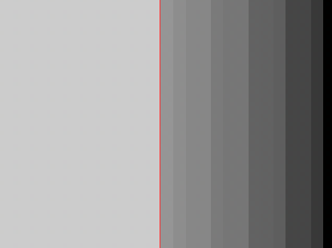
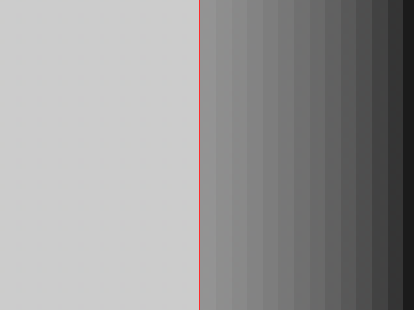
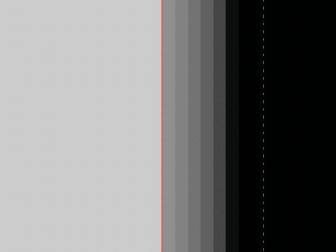
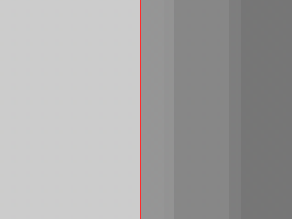
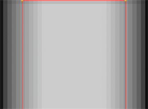
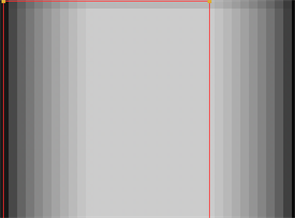
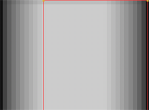

设置形状动画后，可以使用属性中的控件将运动模糊应用于形状列表中的单个形状或当前节点中的所有形状。 运动模糊 标签。
形状模糊 确定每个移动形状的曝光，并混合生成的模糊形状。这可能是更高效 全球 运动模糊，因为每个形状将只混合一次。
注意: 当形状在同一区域模糊时，形状运动模糊可能会导致瑕疵。
申请 形状 运动模糊:
| 1。 | 在形状列表或查看器中选择目标形状。 |
| 2. | 在 “属性” 面板中，选择 运动模糊 标签，并确保 形状 模式已启用。 |
| 3. | 检查 上 旁边的框 Motionblur 将运动模糊应用于形状的字段。如果你不想在你的形状上有任何运动模糊，离开 上 未选中框。 |
提示:
您还可以通过在每个形状的 “运动模糊” 列中单击，在 “形状” 列表中打开和关闭运动模糊
 .
.
| 4. | 在 形状模糊 > Motionblur 字段中，输入采样率。这将影响在快门时间内对输入进行采样的次数。速度越高，结果就越平滑。在许多情况下，值 1.0 就足够了。 |
|
 |
 |
| 0.5 的 motionblur 值产生的样本较少。 | 较高的值 (在本例中为 2.0) 会产生更平滑的模糊。 |
| 5. | 在 快门 字段中，输入当运动模糊时快门保持打开的帧数。例如，值 0.5 对应于半帧。增加值会产生更多模糊，减少值。 |
|
 |
 |
| 0.2 的快门值产生的模糊较少。 | 更高的值，在这种情况下是 1.0，会产生更多的模糊。 |
| 6. | 使用调整快门偏移 快门偏移 下拉菜单。不同的选项控制快门何时相对于当前帧值打开和关闭。选择: |
• 居中 -将快门围绕当前帧居中。例如，如果将 “快门” 值设置为 1，并且当前帧为 30，则快门将从帧 29.5 保持打开，至 30.5。
• 开始 -在当前帧打开快门。例如，如果将快门值设置为 1，并且当前帧为 30，则快门将从帧 30 保持打开。
• 结束 -在当前帧处关闭快门。例如，如果将 “快门” 值设置为 1，并且当前帧为 30，则快门将从帧 29 到 30 保持打开状态。
|
 |
 |
 |
| 将快门围绕当前帧居中。 | 在当前帧处打开快门。 | 在当前帧处关闭快门。 |
• 自定义 -在您指定的时间打开快门。在下拉菜单旁边的字段中，输入要添加到当前帧中的值 (以帧为单位)。要在当前帧之前打开快门，请输入负值。例如，值为-0.5 将在当前帧之前半帧打开快门。
全球模糊 正确解释运动模糊形状之间的相互作用。这可能是更昂贵的比 形状 运动模糊，因为它可以混合每个样本的每个形状，与时间模糊相同。请参阅 应用时间模糊过滤器 欲了解更多信息。
全局运动模糊要求所有形状的快门和采样参数都是相同的，并且已经使用 结束 混合模式。
注意: 全局运动模糊覆盖每个形状的运动模糊，将设置应用于当前节点形状列表中的所有形状。
要添加 全球 运动模糊:
| 1。 | 在 “属性” 面板中，选择 运动模糊 标签，并确保 全球 模式已启用。 |
| 2. | 在 全球模糊 > Motionblur 字段中，输入采样率。这将影响在快门时间内对输入进行采样的次数。速度越高，结果就越平滑。在许多情况下，值 1.0 就足够了。 |
|
|
|
| A motionblur value of 0.5 produces less samples. | A higher value, in this case 2.0, produces a smoother blur. |
| 3. | 在 快门 字段中，输入当运动模糊时快门保持打开的帧数。例如，值 0.5 对应于半帧。增加值会产生更多模糊，减少值。 |
|
|
|
| A shutter value of 0.2 produces less blur. | A higher value, in this case 1.0, produces more blur. |
| 4. | 使用调整快门偏移 快门偏移 下拉菜单。不同的选项控制快门何时相对于当前帧值打开和关闭。选择: |
• centered - to center the shutter around the current frame. For example, if you set the shutter value to 1 and your current frame is 30, the shutter stays open from frame 29.5 to 30.5.
• start - to open the shutter at the current frame. For example, if you set the shutter value to 1 and your current frame is 30, the shutter stays open from frame 30 to 31.
• end - to close the shutter at the current frame. For example, if you set the shutter value to 1 and your current frame is 30, the shutter stays open from frame 29 to 30.
|
|
|
|
| Centering the shutter around the current frame. | Opening the shutter at the current frame. | Closing the shutter at the current frame. |
• custom - to open the shutter at the time you specify. In the field next to the dropdown menu, enter a value (in frames) you want to add to the current frame. To open the shutter before the current frame, enter a negative value. For example, a value of - 0.5 would open the shutter half a frame before the current frame.
|
|